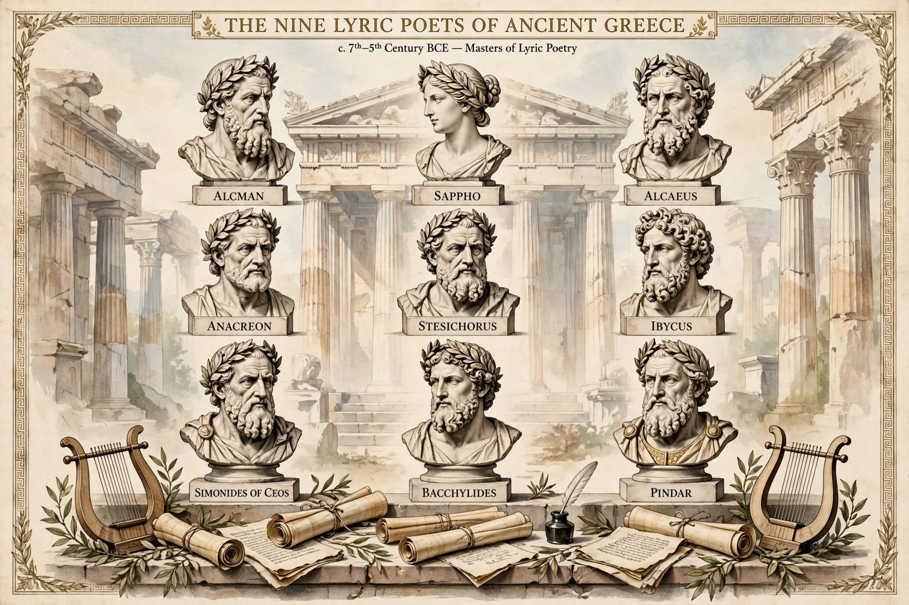

The Nine Lyric Poets were a canon of ancient Greek poets esteemed by the scholars of Hellenistic Alexandria as worthy of critical study. They were listed by Antipater of Thessalonica in the 1st century BCE, and included poets of both choral and monodic lyric.

| Nine Lyric Poets | |
|---|---|
| Origin | Ancient Greece |
| Period | Archaic Greece, 7th-5th c. BCE |
| Canon by | Scholars of Alexandria |
The canon paralleled canons of epic, tragedy and other genres in Hellenistic scholarship. The Alexandrian scholars edited, commented on and arranged their works. Only Pindar's victory odes survive complete in manuscript tradition; the others survive in fragments quoted by later authors or on papyri.
Sappho and Pindar became the most influential in later European poetry, inspiring Horace, Catullus and modern lyric poets. See also Lyric poetry, Ancient Greek literature.